Introduction
GeoDatalytics leverages MapLibre to provide an interactive map display in the main interface. By default, MapLibre provides mouse and keyboard controls to zoom and pan the map.
Mouse controls
-
Scroll up/down to zoom in/out
-
Click and drag to pan
Keyboard Controls
-
+/- to zoom in/out
-
Arrow keys to pan
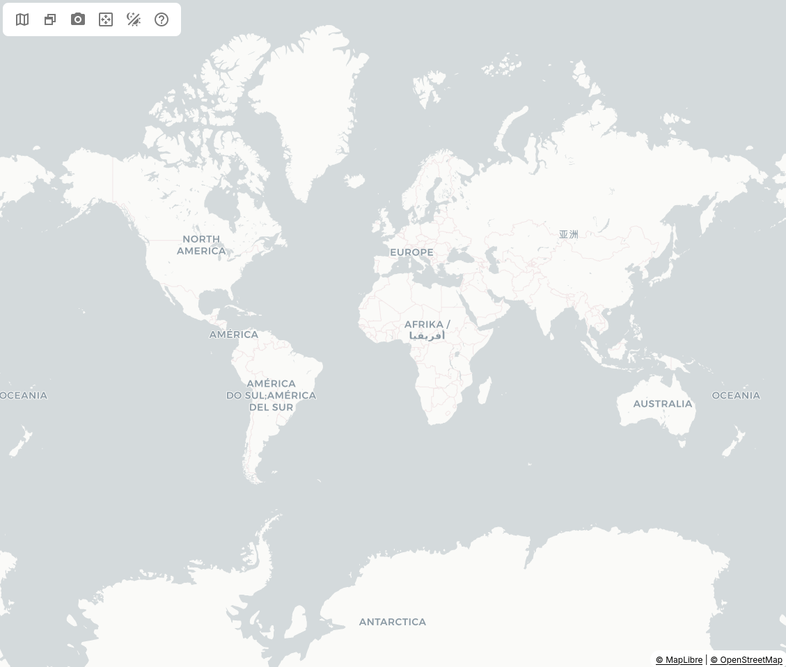
If you add a vector data layer to the map, you can click on any vector feature to display a map tooltip with a list of the feature’s properties. This map tooltip may also show some additional controls for specialized features like network nodes.
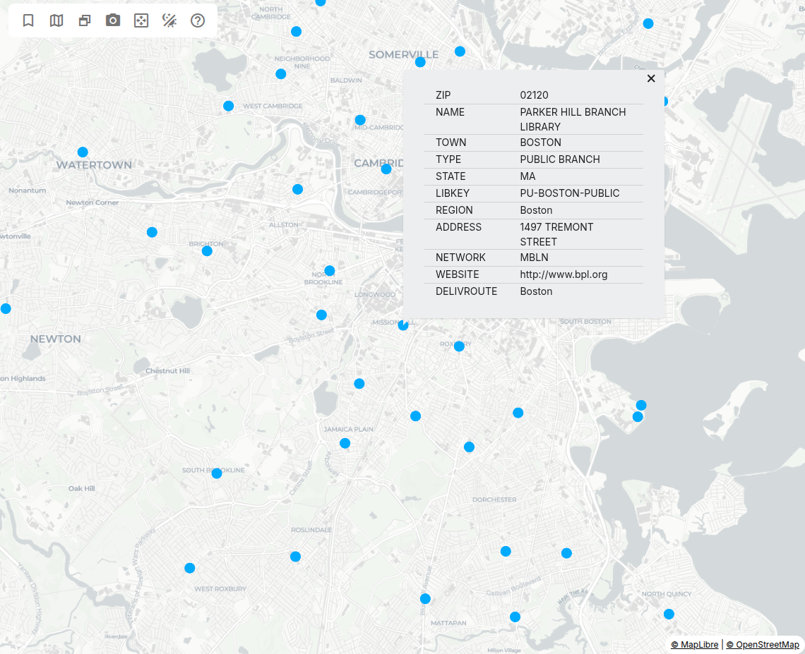
In addition to the basic MapLibre controls, GeoDatalytics provides advanced controls in the toolbar in the top right corner of the map area. This controls bar includes a set of icon buttons that offer advanced features. From left to right, these buttons offer the bookmarks menu, basemap menu, panel visibility menu, screenshot menu, map autofit button, theme toggle button, and help menu. The following sections will explain each of these buttons.
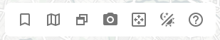
Bookmarks Menu
The first icon in the controls bar will only appear if a project is selected. Hovering over this icon will display the bookmarks menu, which allows you to view the bookmarks that exist on the current project. If you have write permission on the project, this menu also allows you to save your current view state as a bookmark.
Bookmarks allow you to create shortcuts to informative visualizations that you can share with others who have read permission on your project. These bookmarks can be shared and loaded via URL, so you can quickly reload common visualizations. The state saved for a bookmark includes the application theme, basemap, map position, selected layers, current layer styles, sidebar states, and panel configuration.
If your current project does not yet have any bookmarks, the menu will state that “No saved bookmarks exist for this project.” The “Save current view as bookmark” button at the top of the menu, when clicked, will open a dialog form to create a new bookmark for this project.
Note
If you are not logged in or otherwise lack write permission on the current project, you will not have access to create a new bookmark, so that button will be absent from the bookmarks menu.
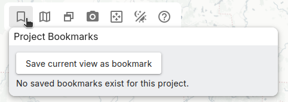
The bookmark creation dialog is a simple form with only one field. You only need to specify a unique name for the bookmark. Below that, a generated thumbnail for the bookmark will be shown. The thumbnail is simply a screenshot of the application taken right before the dialog opens.
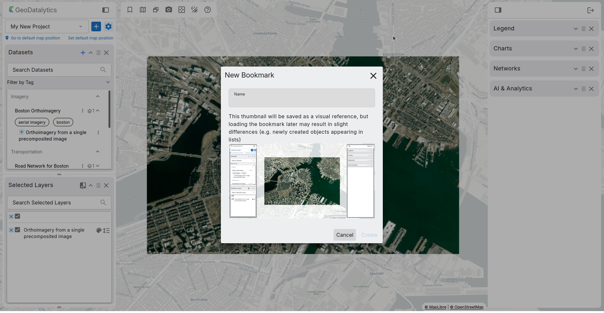
Once you supply a name and click the “Create” button to submit the form, you will be redirected to the bookmark’s URL and the view state will be reloaded. This may include a slight repositioning of the map to the nearest zoom level. Anyone who visits this bookmark’s URL will see the same thing as long as they have read permission on the project.
Opening the bookmarks menu again will show that the newly created bookmark now appears in the list. The list item includes the thumbnail, bookmark name, a trash icon, and a share icon. When you load a bookmark, the bookmark icon in the controls bar will be filled in to show a bookmark is active.
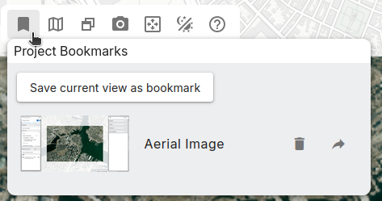
Clicking on the trash icon will open a dialog asking you to confirm whether you want to delete the bookmark. Clicking on the share icon will copy the bookmark’s URL to your clipboard.
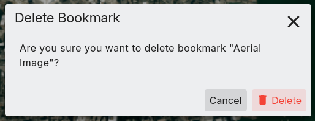
Basemap Menu
The basemap is the set of tiles displayed to show the underlying geography before any dataset layers are added. The basemap menu, which is displayed when you hover over the second icon in the controls bar, allows you to set the current basemap. GeoDatalytics has several basemap options built-in, but you can also create your own.
Note
If you are not logged in, you will not have access to create a new basemap, so that option will not be present in the basemap list.
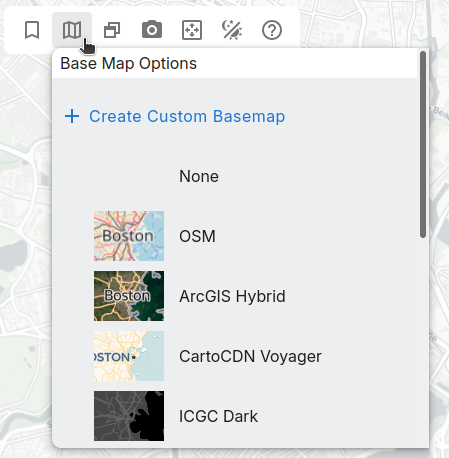
Clicking on any available option in the basemap list will switch the basemap and load the new tiles.
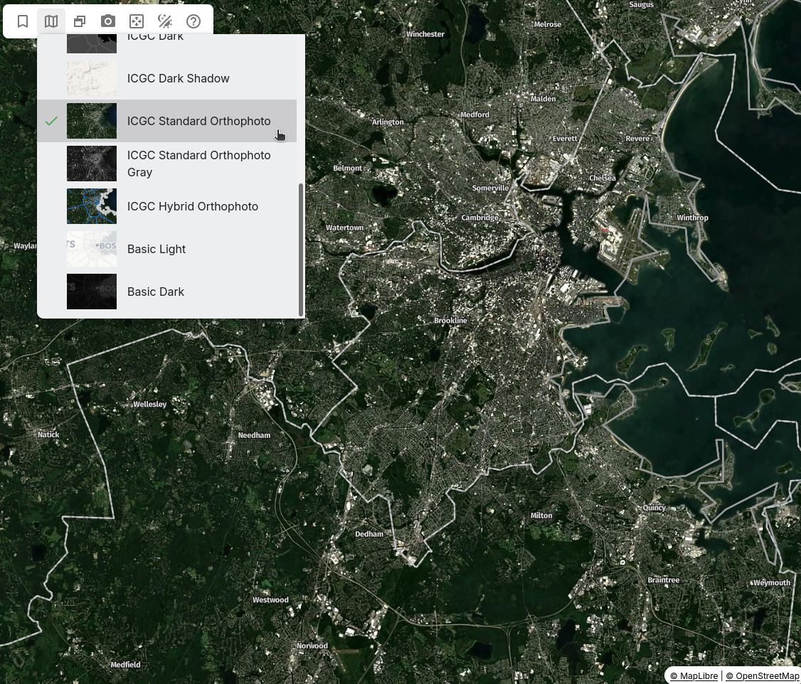
The “None” basemap option does not have any tiles, so it does not show a preview. Selecting this option is equivalent to turning off the basemap. The map will appear blank except for any data layers.
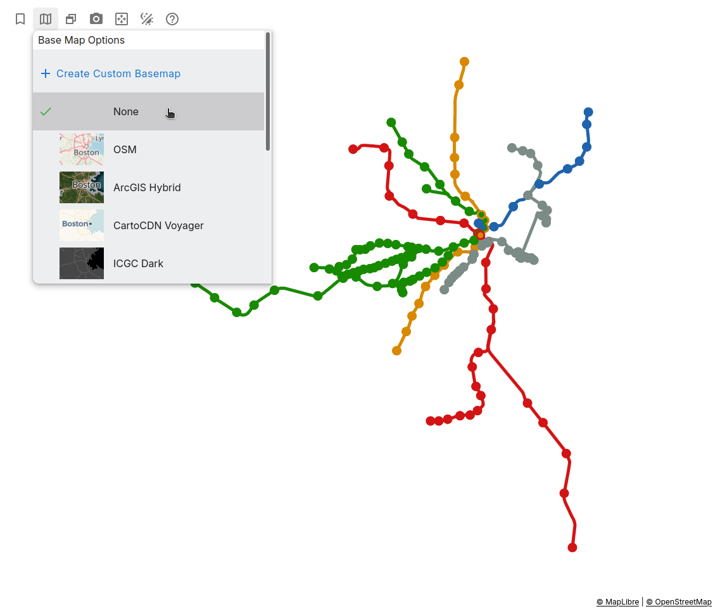
The previews shown next to each basemap option will be created with the same bounds as the main map, so zooming into an area of interest on the main map will cause the previews to show the same area of interest. The previews are also mini interactive maps, so you can use the mouse map controls to pan and zoom if your mouse is over a preview map. Keyboard controls are disabled for the previews.
Creating a new basemap
At the top of the basemap menu, there is an option to “+ Create Custom Basemap”. Clicking on this option will open the basemap creation dialog.
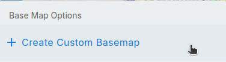
The basemap creation dialog displays a form asking you to name and configure the new basemap. The basemap configuration section has two tabs; you can either set a Tile URL or a MapLibre Style JSON.
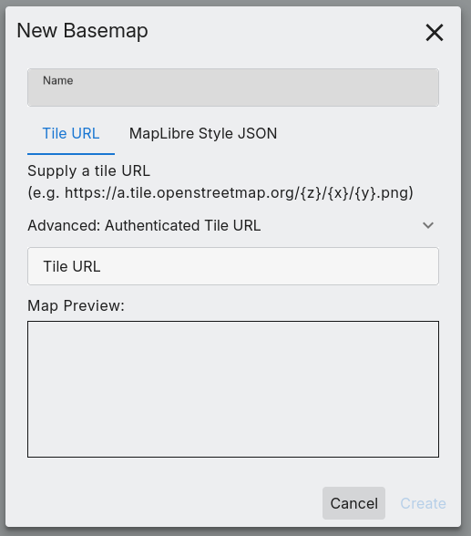
By default, the Tile URL tab is active; this method is more simple and common. This tab shows an example Tile URL value, an expandable section with advanced instructions, and an input to supply your URL. When the advanced instructions section is expanded, some additional information is displayed about using a public API key in your tile URL.
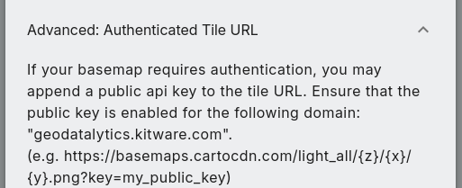
Below the tile URL input, a map preview is shown so that you can confirm whether your URL works. If no preview appears, your tile URL may be incorrect or the target tile server may be down.
In the screenshot below, the provided example URL has been pasted into the input, and the preview shows an interactive map. This map can pan and zoom with mouse controls (or with keyboard controls if you first focus the preview by clicking on it or tabbing to it).
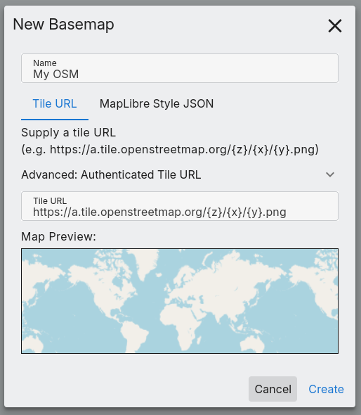
Switching to the “MapLibre Style JSON” tab will display some explanatory text, a JSON editor, and a similar map preview area. This tab explains that you must “Supply a JSON that adheres to the Maplibre Style Spec. Style spec can be supplied directly as JSON or as a URL string that references a publicly accessible JSON file”. The linked MapLibre documentation explains what their style specification entails.
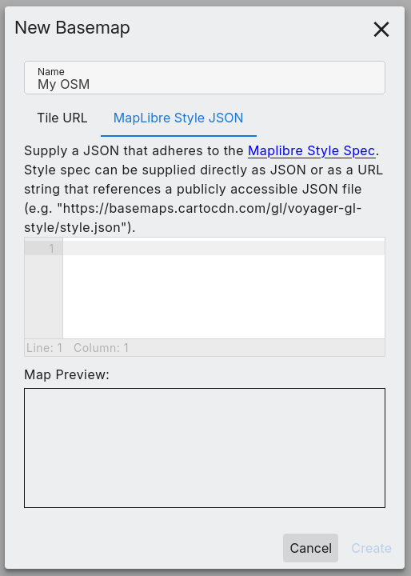
This tab also provides an example value, so the screenshot below shows that the example value has been pasted into the JSON editor input, and the preview shows an interactive map. This example value is a URL pointing to a publicly accessible JSON file with a full MapLibre style specification.
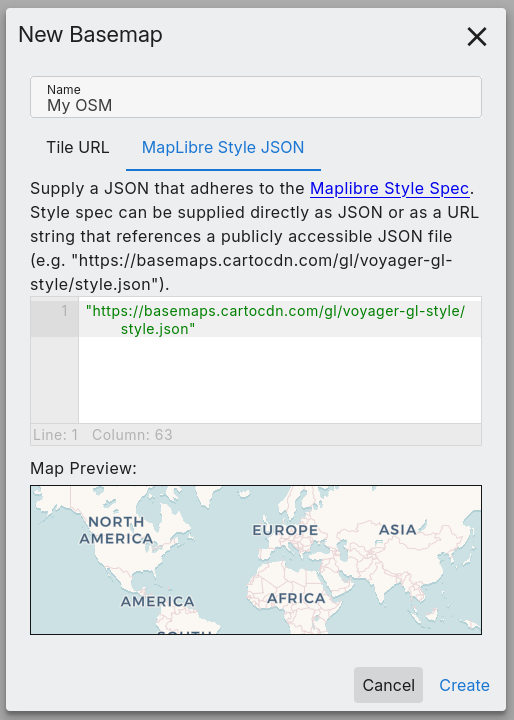
You may also specify the basemap style directly with JSON. In the screenshot below, the JSON editor input has a simple style specification; this is the same specification used for the “Basic Dark” builtin basemap.
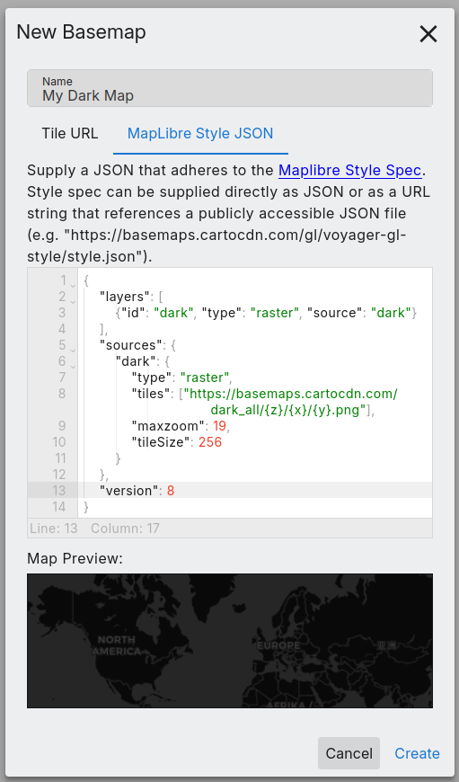
As you type in the JSON editor, your style specification will be validated prior to creating the interactive preview. An informative error message will be displayed if you fail to meet the style specification requirements. The screenshot below shows the same style specification with the “layers” property removed. Instead of an interactive preview, the following message is displayed: “Error: missing required property ‘layers’”.
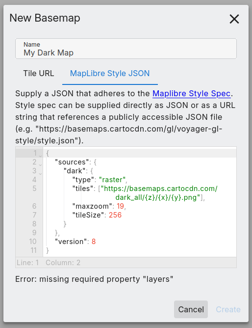
Once your preview works properly and has the desired style, you may click the “Create” button at the bottom of the dialog. Your custom basemap will appear in the list in the basemap menu.
Note
All users will be able to see and use your custom basemap once it has been created.
Panel Visibility
The third icon in the controls menu offers a simple list of checkbox controls. Each item in the list corresponds to a UI panel and the checkbox controls the visibility of that panel. If you close a panel with the ‘X’ button in the top right corner of the panel, you can open it again from this menu.
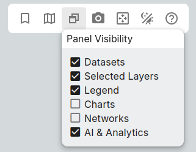
Screenshot Menu
The fourth icon in the controls bar is a camera; hovering over this icon will display the screenshot menu. This simple menu only has a few controls:
-
A checkbox labelled “Map Only”. This checkbox is unchecked by default. When this checkbox is checked, the resulting screenshot will exclude the sidebars, control bar, and any floating panels. Only map elements (including the map tooltip) will be shown.
-
A “Copy image to clipboard” button which, when clicked, will take a screenshot and copy the resulting image to your clipboard.
-
A “Save image” button which, when clicked, will take a screenshot and use your browser’s default behavior to save the image to disk. On some browsers, this may go straight to your Downloads folder. On other browsers, a filesystem dialog may appear to prompt you for the location to which the screenshot should be saved. By default, the image will be named “geodatalytics_screenshot.png”.
For both copied and saved screenshots, a camera flash animation will appear to indicate that the screenshot has been captured.
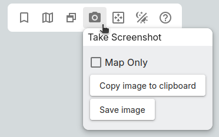
Map Autofit
The fifth icon in the controls bar is a button to automatically fit the bounds of the map to the set of currently visible layers. In this case, a “visible” layer is any layer that is added to the Selected Layers panel and does not have its visibility toggled off. A layer can be visible even if it is not in your current viewport.
Keep in mind that if you have multiple visible layers, clicking this button will fly the map to a position that shows the union of the bounds of all of those layers. If your visible layers are geographically far apart, this button will likely be less useful.
If you only have one visible layer, this button will autofit the map bounds to just that layer. This can be especially useful if you don’t know where the layer should appear on the map and want to find the location quickly.
If you have not yet added any layers to the map, this button does nothing.
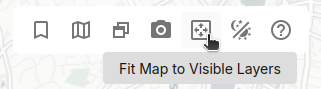
Theme Toggle
The sixth icon in the controls bar is a button to toggle the application theme between light and dark modes.
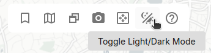
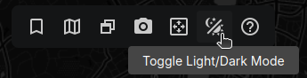
Help Menu
The seventh and final icon in the controls bar shows a simple help menu when hovered. This help menu has a button to show a small tutorial of the interface, and it summarizes the map’s mouse and keyboard controls explained in the introduction above.
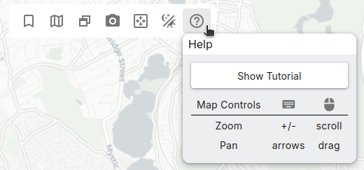